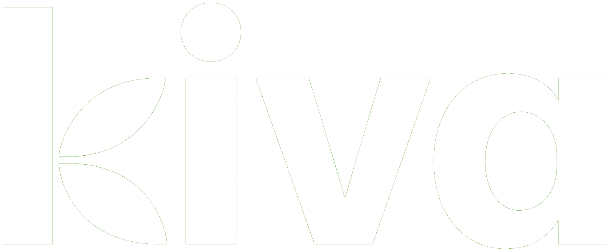

<md-sidenav-container>
    <md-toolbar color="primary">
        <md-icon (click)="sidenav.toggle()" class="clickable">menu</md-icon>
        <span>{{getNavigationTitle()}}</span>
        <button md-button [mdMenuTriggerFor]="menu" class="login">Login</button>
        <md-menu #menu="mdMenu">
            <button md-menu-item *ngFor="let customer of customers" (click)="chooseCustomer(customer.id)" [routerLink]="''">
                {{customer.name}}
            </button>
        </md-menu>
    </md-toolbar>
    <md-sidenav #sidenav mode="over">
        <md-toolbar color="primary">
            
        </md-toolbar>
        <md-list class="sidenav-list">
            <a *ngFor="let menuItem of menuItems" [routerLink]="menuItem.link" class="menu-item-button" (click)="closeSidenav()">
                <md-list-item>
                    <md-icon class="menu-icon">{{menuItem.icon}}</md-icon>
                    <p>{{menuItem.title}}</p>
                </md-list-item>
                <md-divider></md-divider>
            </a>
        </md-list>
    </md-sidenav>

    <router-outlet></router-outlet>
</md-sidenav-container>


